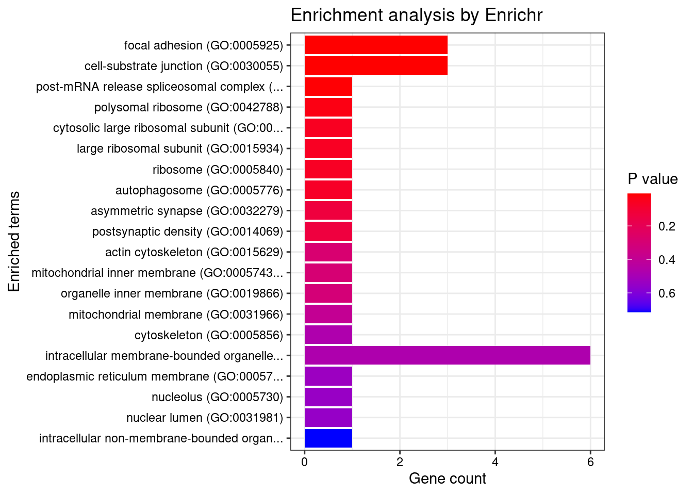
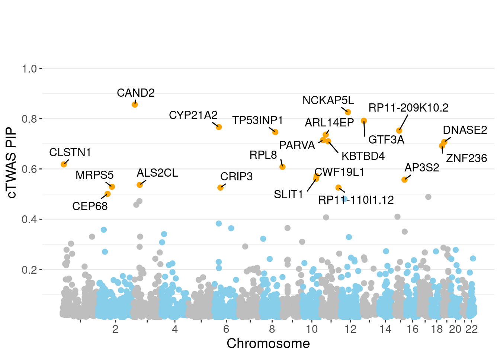

T2D - Liver
sheng Qian
2021-2-6
Last updated: 2022-02-14
Checks: 6 1
Knit directory: cTWAS_analysis/
This reproducible R Markdown analysis was created with workflowr (version 1.6.2). The Checks tab describes the reproducibility checks that were applied when the results were created. The Past versions tab lists the development history.
Great! Since the R Markdown file has been committed to the Git repository, you know the exact version of the code that produced these results.
Great job! The global environment was empty. Objects defined in the global environment can affect the analysis in your R Markdown file in unknown ways. For reproduciblity it’s best to always run the code in an empty environment.
The command set.seed(20211220) was run prior to running the code in the R Markdown file. Setting a seed ensures that any results that rely on randomness, e.g. subsampling or permutations, are reproducible.
Great job! Recording the operating system, R version, and package versions is critical for reproducibility.
Nice! There were no cached chunks for this analysis, so you can be confident that you successfully produced the results during this run.
Using absolute paths to the files within your workflowr project makes it difficult for you and others to run your code on a different machine. Change the absolute path(s) below to the suggested relative path(s) to make your code more reproducible.
| absolute | relative |
|---|---|
| /project2/xinhe/shengqian/cTWAS/cTWAS_analysis/data/ | data |
| /project2/xinhe/shengqian/cTWAS/cTWAS_analysis/code/ctwas_config.R | code/ctwas_config.R |
Great! You are using Git for version control. Tracking code development and connecting the code version to the results is critical for reproducibility.
The results in this page were generated with repository version cf57e2f. See the Past versions tab to see a history of the changes made to the R Markdown and HTML files.
Note that you need to be careful to ensure that all relevant files for the analysis have been committed to Git prior to generating the results (you can use wflow_publish or wflow_git_commit). workflowr only checks the R Markdown file, but you know if there are other scripts or data files that it depends on. Below is the status of the Git repository when the results were generated:
Ignored files:
Ignored: .ipynb_checkpoints/
Untracked files:
Untracked: code/.ipynb_checkpoints/
Untracked: code/AF_out/
Untracked: code/BMI_out/
Untracked: code/T2D_out/
Untracked: code/ctwas_config.R
Untracked: code/mapping.R
Untracked: code/out/
Untracked: code/run_AF_analysis.sbatch
Untracked: code/run_AF_analysis.sh
Untracked: code/run_AF_ctwas_rss_LDR.R
Untracked: code/run_BMI_analysis.sbatch
Untracked: code/run_BMI_analysis.sh
Untracked: code/run_BMI_ctwas_rss_LDR.R
Untracked: code/run_T2D_analysis.sbatch
Untracked: code/run_T2D_analysis.sh
Untracked: code/run_T2D_ctwas_rss_LDR.R
Untracked: data/.ipynb_checkpoints/
Untracked: data/AF/
Untracked: data/BMI/
Untracked: data/T2D/
Untracked: data/UKBB/
Untracked: data/UKBB_SNPs_Info.text
Untracked: data/gene_OMIM.txt
Untracked: data/gene_pip_0.8.txt
Untracked: data/mashr_Heart_Atrial_Appendage.db
Untracked: data/summary_known_genes_annotations.xlsx
Untracked: data/untitled.txt
Note that any generated files, e.g. HTML, png, CSS, etc., are not included in this status report because it is ok for generated content to have uncommitted changes.
These are the previous versions of the repository in which changes were made to the R Markdown (analysis/T2D_Liver.Rmd) and HTML (docs/T2D_Liver.html) files. If you’ve configured a remote Git repository (see ?wflow_git_remote), click on the hyperlinks in the table below to view the files as they were in that past version.
| File | Version | Author | Date | Message |
|---|---|---|---|---|
| Rmd | cf57e2f | sq-96 | 2022-02-14 | update |
| Rmd | 721f7e8 | sq-96 | 2022-02-14 | update |
| html | 91f38fa | sq-96 | 2022-02-13 | Build site. |
| Rmd | eb13ecf | sq-96 | 2022-02-13 | update |
| html | e6bc169 | sq-96 | 2022-02-13 | Build site. |
| Rmd | 87fee8b | sq-96 | 2022-02-13 | update |
Weight QC
#number of imputed weights
nrow(qclist_all)[1] 10290#number of imputed weights by chromosome
table(qclist_all$chr)
1 2 3 4 5 6 7 8 9 10 11 12 13 14 15 16
1015 728 627 403 457 577 509 392 388 394 607 572 190 353 340 483
17 18 19 20 21 22
629 151 808 290 108 269 #number of imputed weights without missing variants
sum(qclist_all$nmiss==0)[1] 8215#proportion of imputed weights without missing variants
mean(qclist_all$nmiss==0)[1] 0.7983Check convergence of parameters
| Version | Author | Date |
|---|---|---|
| e6bc169 | sq-96 | 2022-02-13 |
#estimated group prior
estimated_group_prior <- group_prior_rec[,ncol(group_prior_rec)]
names(estimated_group_prior) <- c("gene", "snp")
estimated_group_prior["snp"] <- estimated_group_prior["snp"]*thin #adjust parameter to account for thin argument
print(estimated_group_prior) gene snp
0.0041007 0.0001803 #estimated group prior variance
estimated_group_prior_var <- group_prior_var_rec[,ncol(group_prior_var_rec)]
names(estimated_group_prior_var) <- c("gene", "snp")
print(estimated_group_prior_var) gene snp
4.389 1.535 #report sample size
print(sample_size)[1] 337159#report group size
group_size <- c(nrow(ctwas_gene_res), n_snps)
print(group_size)[1] 10290 7535010#estimated group PVE
estimated_group_pve <- estimated_group_prior_var*estimated_group_prior*group_size/sample_size #check PVE calculation
names(estimated_group_pve) <- c("gene", "snp")
print(estimated_group_pve) gene snp
0.0005493 0.0061836 #compare sum(PIP*mu2/sample_size) with above PVE calculation
c(sum(ctwas_gene_res$PVE),sum(ctwas_snp_res$PVE))[1] 0.004835 0.111689Genes with highest PIPs

genename region_tag susie_pip mu2 PVE z num_eqtl
3212 CCND2 12_4 0.9960 27.98 8.264e-05 5.657 1
2240 SEC23IP 10_74 0.6382 61.38 1.162e-04 -3.611 1
12661 LINC01126 2_27 0.4142 28.19 3.463e-05 4.620 1
10283 MCMBP 10_74 0.3686 60.32 6.594e-05 3.522 1
703 GUCY2C 12_12 0.2542 35.09 2.645e-05 3.879 1
6307 NUS1 6_78 0.2350 32.15 2.241e-05 3.716 1
12541 RP6-65G23.5 14_33 0.2244 30.24 2.013e-05 3.370 1
5911 CIZ1 9_66 0.2067 30.11 1.846e-05 -3.514 2
6558 AP3S2 15_41 0.1991 30.36 1.793e-05 -3.746 1
7641 NDEL1 17_8 0.1908 28.90 1.635e-05 -3.137 1
10118 RABL6 9_74 0.1895 30.14 1.694e-05 3.491 1
2577 GNPTAB 12_61 0.1869 29.62 1.642e-05 3.601 1
4089 UBAC1 9_72 0.1743 28.56 1.476e-05 3.439 1
9318 LIPF 10_56 0.1709 29.37 1.489e-05 -2.992 1
12431 RP11-535A5.1 18_11 0.1657 28.09 1.380e-05 -2.998 1
12123 UPK3BL 7_63 0.1607 28.41 1.354e-05 3.135 1
1624 TPD52L2 20_38 0.1531 28.21 1.281e-05 -3.091 1
1483 RPL3 22_16 0.1467 27.86 1.212e-05 3.285 1
4539 ISCA1 9_44 0.1449 27.76 1.194e-05 3.270 1
3541 ARHGAP9 12_36 0.1431 26.51 1.125e-05 2.926 1Genes with largest effect sizes

genename region_tag susie_pip mu2 PVE z num_eqtl
2240 SEC23IP 10_74 0.6382 61.38 1.162e-04 -3.611 1
10283 MCMBP 10_74 0.3686 60.32 6.594e-05 3.522 1
703 GUCY2C 12_12 0.2542 35.09 2.645e-05 3.879 1
8349 GPHN 14_32 0.1375 33.30 1.357e-05 -3.427 2
6307 NUS1 6_78 0.2350 32.15 2.241e-05 3.716 1
6558 AP3S2 15_41 0.1991 30.36 1.793e-05 -3.746 1
12541 RP6-65G23.5 14_33 0.2244 30.24 2.013e-05 3.370 1
10118 RABL6 9_74 0.1895 30.14 1.694e-05 3.491 1
5911 CIZ1 9_66 0.2067 30.11 1.846e-05 -3.514 2
5073 ETNK1 12_16 0.1407 29.99 1.251e-05 3.170 1
7288 AGGF1 5_45 0.1051 29.89 9.318e-06 -3.154 2
2577 GNPTAB 12_61 0.1869 29.62 1.642e-05 3.601 1
9318 LIPF 10_56 0.1709 29.37 1.489e-05 -2.992 1
7641 NDEL1 17_8 0.1908 28.90 1.635e-05 -3.137 1
4089 UBAC1 9_72 0.1743 28.56 1.476e-05 3.439 1
12123 UPK3BL 7_63 0.1607 28.41 1.354e-05 3.135 1
1624 TPD52L2 20_38 0.1531 28.21 1.281e-05 -3.091 1
12661 LINC01126 2_27 0.4142 28.19 3.463e-05 4.620 1
12431 RP11-535A5.1 18_11 0.1657 28.09 1.380e-05 -2.998 1
1460 PPP6R2 22_24 0.1361 27.99 1.130e-05 -3.284 1Genes with highest PVE
genename region_tag susie_pip mu2 PVE z num_eqtl
2240 SEC23IP 10_74 0.6382 61.38 1.162e-04 -3.611 1
3212 CCND2 12_4 0.9960 27.98 8.264e-05 5.657 1
10283 MCMBP 10_74 0.3686 60.32 6.594e-05 3.522 1
12661 LINC01126 2_27 0.4142 28.19 3.463e-05 4.620 1
703 GUCY2C 12_12 0.2542 35.09 2.645e-05 3.879 1
6307 NUS1 6_78 0.2350 32.15 2.241e-05 3.716 1
12541 RP6-65G23.5 14_33 0.2244 30.24 2.013e-05 3.370 1
5911 CIZ1 9_66 0.2067 30.11 1.846e-05 -3.514 2
6558 AP3S2 15_41 0.1991 30.36 1.793e-05 -3.746 1
10118 RABL6 9_74 0.1895 30.14 1.694e-05 3.491 1
2577 GNPTAB 12_61 0.1869 29.62 1.642e-05 3.601 1
7641 NDEL1 17_8 0.1908 28.90 1.635e-05 -3.137 1
9318 LIPF 10_56 0.1709 29.37 1.489e-05 -2.992 1
4089 UBAC1 9_72 0.1743 28.56 1.476e-05 3.439 1
12431 RP11-535A5.1 18_11 0.1657 28.09 1.380e-05 -2.998 1
8349 GPHN 14_32 0.1375 33.30 1.357e-05 -3.427 2
12123 UPK3BL 7_63 0.1607 28.41 1.354e-05 3.135 1
1624 TPD52L2 20_38 0.1531 28.21 1.281e-05 -3.091 1
5073 ETNK1 12_16 0.1407 29.99 1.251e-05 3.170 1
1483 RPL3 22_16 0.1467 27.86 1.212e-05 3.285 1Genes with largest z scores
genename region_tag susie_pip mu2 PVE z num_eqtl
3212 CCND2 12_4 0.99598 27.98 8.264e-05 5.657 1
12661 LINC01126 2_27 0.41421 28.19 3.463e-05 4.620 1
703 GUCY2C 12_12 0.25415 35.09 2.645e-05 3.879 1
6558 AP3S2 15_41 0.19907 30.36 1.793e-05 -3.746 1
6307 NUS1 6_78 0.23500 32.15 2.241e-05 3.716 1
2240 SEC23IP 10_74 0.63818 61.38 1.162e-04 -3.611 1
2577 GNPTAB 12_61 0.18690 29.62 1.642e-05 3.601 1
10283 MCMBP 10_74 0.36857 60.32 6.594e-05 3.522 1
1505 RBX1 22_17 0.13907 26.28 1.084e-05 -3.521 1
5911 CIZ1 9_66 0.20671 30.11 1.846e-05 -3.514 2
10118 RABL6 9_74 0.18950 30.14 1.694e-05 3.491 1
4089 UBAC1 9_72 0.17429 28.56 1.476e-05 3.439 1
10840 PPP1CB 2_17 0.08613 23.42 5.984e-06 3.434 3
7172 SPDYA 2_17 0.08538 23.35 5.913e-06 -3.430 2
8349 GPHN 14_32 0.13745 33.30 1.357e-05 -3.427 2
5040 CNOT6L 4_52 0.13255 27.12 1.066e-05 3.424 1
12541 RP6-65G23.5 14_33 0.22445 30.24 2.013e-05 3.370 1
1483 RPL3 22_16 0.14670 27.86 1.212e-05 3.285 1
1460 PPP6R2 22_24 0.13614 27.99 1.130e-05 -3.284 1
2417 GLRB 4_101 0.13568 27.34 1.100e-05 3.270 1Comparing z scores and PIPs
[1] 0.0001944 genename region_tag susie_pip mu2 PVE z num_eqtl
3212 CCND2 12_4 0.99598 27.98 8.264e-05 5.657 1
12661 LINC01126 2_27 0.41421 28.19 3.463e-05 4.620 1
703 GUCY2C 12_12 0.25415 35.09 2.645e-05 3.879 1
6558 AP3S2 15_41 0.19907 30.36 1.793e-05 -3.746 1
6307 NUS1 6_78 0.23500 32.15 2.241e-05 3.716 1
2240 SEC23IP 10_74 0.63818 61.38 1.162e-04 -3.611 1
2577 GNPTAB 12_61 0.18690 29.62 1.642e-05 3.601 1
10283 MCMBP 10_74 0.36857 60.32 6.594e-05 3.522 1
1505 RBX1 22_17 0.13907 26.28 1.084e-05 -3.521 1
5911 CIZ1 9_66 0.20671 30.11 1.846e-05 -3.514 2
10118 RABL6 9_74 0.18950 30.14 1.694e-05 3.491 1
4089 UBAC1 9_72 0.17429 28.56 1.476e-05 3.439 1
10840 PPP1CB 2_17 0.08613 23.42 5.984e-06 3.434 3
7172 SPDYA 2_17 0.08538 23.35 5.913e-06 -3.430 2
8349 GPHN 14_32 0.13745 33.30 1.357e-05 -3.427 2
5040 CNOT6L 4_52 0.13255 27.12 1.066e-05 3.424 1
12541 RP6-65G23.5 14_33 0.22445 30.24 2.013e-05 3.370 1
1483 RPL3 22_16 0.14670 27.86 1.212e-05 3.285 1
1460 PPP6R2 22_24 0.13614 27.99 1.130e-05 -3.284 1
2417 GLRB 4_101 0.13568 27.34 1.100e-05 3.270 1Gene set enrichment for genes with PIP>0.5
[1] 2Uploading data to Enrichr... Done.
Querying GO_Biological_Process_2021... Done.
Querying GO_Cellular_Component_2021... Done.
Querying GO_Molecular_Function_2021... Done.
Parsing results... Done.
[1] "GO_Biological_Process_2021" Term
1 positive regulation of cyclin-dependent protein serine/threonine kinase activity (GO:0045737)
2 positive regulation of cyclin-dependent protein kinase activity (GO:1904031)
3 positive regulation of G1/S transition of mitotic cell cycle (GO:1900087)
4 positive regulation of cell cycle G1/S phase transition (GO:1902808)
5 regulation of cyclin-dependent protein kinase activity (GO:1904029)
6 positive regulation of mitotic cell cycle phase transition (GO:1901992)
7 COPII vesicle coating (GO:0048208)
8 vesicle coating (GO:0006901)
9 vesicle targeting, rough ER to cis-Golgi (GO:0048207)
10 positive regulation of cell cycle (GO:0045787)
11 COPII-coated vesicle budding (GO:0090114)
12 regulation of G1/S transition of mitotic cell cycle (GO:2000045)
13 regulation of cyclin-dependent protein serine/threonine kinase activity (GO:0000079)
14 positive regulation of protein serine/threonine kinase activity (GO:0071902)
15 regulation of protein serine/threonine kinase activity (GO:0071900)
16 Golgi organization (GO:0007030)
17 endomembrane system organization (GO:0010256)
18 mitotic cell cycle phase transition (GO:0044772)
19 positive regulation of protein modification process (GO:0031401)
20 positive regulation of phosphorylation (GO:0042327)
21 regulation of protein phosphorylation (GO:0001932)
22 protein-containing complex assembly (GO:0065003)
23 cellular protein localization (GO:0034613)
24 intracellular protein transport (GO:0006886)
25 protein transport (GO:0015031)
26 positive regulation of protein phosphorylation (GO:0001934)
27 negative regulation of programmed cell death (GO:0043069)
28 organelle organization (GO:0006996)
Overlap Adjusted.P.value Genes
1 1/17 0.01949 CCND2
2 1/20 0.01949 CCND2
3 1/26 0.01949 CCND2
4 1/35 0.01949 CCND2
5 1/54 0.01949 CCND2
6 1/58 0.01949 CCND2
7 1/63 0.01949 SEC23IP
8 1/63 0.01949 SEC23IP
9 1/63 0.01949 SEC23IP
10 1/66 0.01949 CCND2
11 1/70 0.01949 SEC23IP
12 1/71 0.01949 CCND2
13 1/82 0.02077 CCND2
14 1/106 0.02435 CCND2
15 1/111 0.02435 CCND2
16 1/130 0.02673 SEC23IP
17 1/199 0.03697 SEC23IP
18 1/209 0.03697 CCND2
19 1/214 0.03697 CCND2
20 1/253 0.03978 CCND2
21 1/266 0.03978 CCND2
22 1/267 0.03978 SEC23IP
23 1/329 0.04581 SEC23IP
24 1/336 0.04581 SEC23IP
25 1/369 0.04612 SEC23IP
26 1/371 0.04612 CCND2
27 1/381 0.04612 CCND2
28 1/420 0.04898 SEC23IP
[1] "GO_Cellular_Component_2021"
Term Overlap
1 cyclin-dependent protein kinase holoenzyme complex (GO:0000307) 1/30
2 serine/threonine protein kinase complex (GO:1902554) 1/37
3 COPII-coated ER to Golgi transport vesicle (GO:0030134) 1/79
4 coated vesicle (GO:0030135) 1/84
5 nuclear membrane (GO:0031965) 1/204
Adjusted.P.value Genes
1 0.01848 CCND2
2 0.01848 CCND2
3 0.02096 SEC23IP
4 0.02096 SEC23IP
5 0.04059 CCND2
[1] "GO_Molecular_Function_2021" Term
1 cyclin-dependent protein serine/threonine kinase regulator activity (GO:0016538)
2 lipase activity (GO:0016298)
3 phospholipase activity (GO:0004620)
4 protein kinase regulator activity (GO:0019887)
Overlap Adjusted.P.value Genes
1 1/44 0.01700 CCND2
2 1/49 0.01700 SEC23IP
3 1/73 0.01700 SEC23IP
4 1/98 0.01711 CCND2
Description FDR
6 Communicating Hydrocephalus 0.00202
19 POLYDACTYLY, POSTAXIAL 0.00202
22 Hydrocephalus Ex-Vacuo 0.00202
24 Post-Traumatic Hydrocephalus 0.00202
25 Obstructive Hydrocephalus 0.00202
30 Cerebral ventriculomegaly 0.00202
32 Perisylvian syndrome 0.00202
33 Megalanecephaly Polymicrogyria-Polydactyly Hydrocephalus Syndrome 0.00202
34 POSTAXIAL POLYDACTYLY, TYPE B 0.00202
36 Alcohol Toxicity 0.00202
Ratio BgRatio
6 1/1 7/9703
19 1/1 4/9703
22 1/1 7/9703
24 1/1 7/9703
25 1/1 7/9703
30 1/1 7/9703
32 1/1 4/9703
33 1/1 4/9703
34 1/1 3/9703
36 1/1 2/9703
Loading the functional categories...
Loading the ID list...
Loading the reference list...
Performing the enrichment analysis...Warning in oraEnrichment(interestGeneList, referenceGeneList, geneSet, minNum =
minNum, : No significant gene set is identified based on FDR 0.05!NULLPIP Manhattan Plot

Sensitivity, specificity and precision for silver standard genes
#number of genes in known annotations
print(length(known_annotations))[1] 72#number of genes in known annotations with imputed expression
print(sum(known_annotations %in% ctwas_gene_res$genename))[1] 33#significance threshold for TWAS
print(sig_thresh)[1] 4.571#number of ctwas genes
length(ctwas_genes)[1] 1#number of TWAS genes
length(twas_genes)[1] 2#show novel genes (ctwas genes with not in TWAS genes)
ctwas_gene_res[ctwas_gene_res$genename %in% novel_genes,report_cols][1] genename region_tag susie_pip mu2 PVE z num_eqtl
<0 rows> (or 0-length row.names)#sensitivity / recall
print(sensitivity)ctwas TWAS
0 0 #specificity
print(specificity) ctwas TWAS
0.9999 0.9998 #precision / PPV
print(precision)ctwas TWAS
0 0 
sessionInfo()R version 3.6.1 (2019-07-05)
Platform: x86_64-pc-linux-gnu (64-bit)
Running under: Scientific Linux 7.4 (Nitrogen)
Matrix products: default
BLAS/LAPACK: /software/openblas-0.2.19-el7-x86_64/lib/libopenblas_haswellp-r0.2.19.so
locale:
[1] LC_CTYPE=en_US.UTF-8 LC_NUMERIC=C
[3] LC_TIME=en_US.UTF-8 LC_COLLATE=en_US.UTF-8
[5] LC_MONETARY=en_US.UTF-8 LC_MESSAGES=en_US.UTF-8
[7] LC_PAPER=en_US.UTF-8 LC_NAME=C
[9] LC_ADDRESS=C LC_TELEPHONE=C
[11] LC_MEASUREMENT=en_US.UTF-8 LC_IDENTIFICATION=C
attached base packages:
[1] stats graphics grDevices utils datasets methods base
other attached packages:
[1] readxl_1.3.1 forcats_0.5.1 stringr_1.4.0 dplyr_1.0.7
[5] purrr_0.3.4 readr_2.1.1 tidyr_1.1.4 tidyverse_1.3.1
[9] tibble_3.1.6 WebGestaltR_0.4.4 disgenet2r_0.99.2 enrichR_3.0
[13] cowplot_1.0.0 ggplot2_3.3.5 workflowr_1.6.2
loaded via a namespace (and not attached):
[1] fs_1.5.2 lubridate_1.8.0 bit64_4.0.5 doParallel_1.0.16
[5] httr_1.4.2 rprojroot_2.0.2 tools_3.6.1 backports_1.4.1
[9] doRNG_1.8.2 utf8_1.2.2 R6_2.5.1 vipor_0.4.5
[13] DBI_1.1.1 colorspace_2.0-2 withr_2.4.3 ggrastr_1.0.1
[17] tidyselect_1.1.1 bit_4.0.4 curl_4.3.2 compiler_3.6.1
[21] git2r_0.26.1 cli_3.1.0 rvest_1.0.2 Cairo_1.5-12.2
[25] xml2_1.3.3 labeling_0.4.2 scales_1.1.1 apcluster_1.4.8
[29] digest_0.6.29 rmarkdown_2.11 svglite_1.2.2 pkgconfig_2.0.3
[33] htmltools_0.5.2 dbplyr_2.1.1 fastmap_1.1.0 highr_0.9
[37] rlang_0.4.12 rstudioapi_0.13 RSQLite_2.2.8 jquerylib_0.1.4
[41] farver_2.1.0 generics_0.1.1 jsonlite_1.7.2 vroom_1.5.7
[45] magrittr_2.0.1 Matrix_1.2-18 ggbeeswarm_0.6.0 Rcpp_1.0.7
[49] munsell_0.5.0 fansi_0.5.0 gdtools_0.1.9 lifecycle_1.0.1
[53] stringi_1.7.6 whisker_0.3-2 yaml_2.2.1 plyr_1.8.6
[57] grid_3.6.1 blob_1.2.2 ggrepel_0.9.1 parallel_3.6.1
[61] promises_1.0.1 crayon_1.4.2 lattice_0.20-38 haven_2.4.3
[65] hms_1.1.1 knitr_1.36 pillar_1.6.4 igraph_1.2.10
[69] rjson_0.2.20 rngtools_1.5.2 reshape2_1.4.4 codetools_0.2-16
[73] reprex_2.0.1 glue_1.5.1 evaluate_0.14 data.table_1.14.2
[77] modelr_0.1.8 vctrs_0.3.8 tzdb_0.2.0 httpuv_1.5.1
[81] foreach_1.5.1 cellranger_1.1.0 gtable_0.3.0 assertthat_0.2.1
[85] cachem_1.0.6 xfun_0.29 broom_0.7.10 later_0.8.0
[89] iterators_1.0.13 beeswarm_0.2.3 memoise_2.0.1 ellipsis_0.3.2